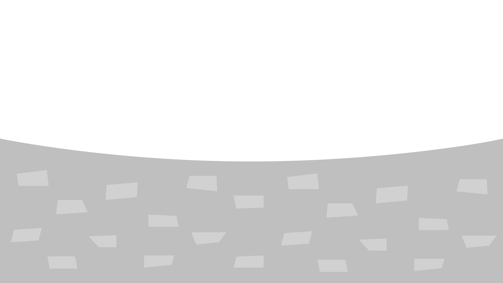
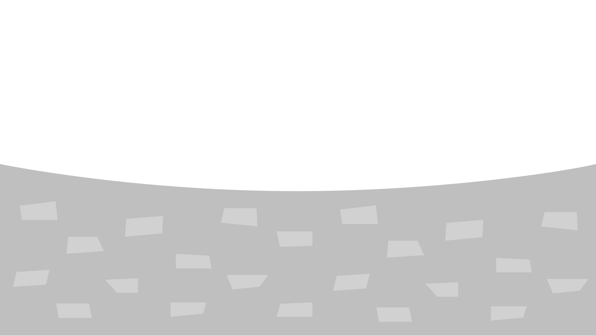

Énergies fossiles
Le pétrole, le gaz naturel et le charbon sont les trois principales sources d’énergie utilisées dans le monde. Ensemble, elles représentent 80 % des énergies consommées. Or, ce sont aussi les plus polluantes !
Un peu d'histoire
Une utilisation récente
Cela fait moins de 200 ans que l’humanité utilise massivement les énergies fossiles ! Pendant longtemps, ces sources étaient peu connues et l’on ne savait pas s’en servir. Parfois, on tombait sur un gisement par hasard en creusant un puits et on se servait alors du pétrole pour alimenter des lampes.
Puits de feu
Il y a 2500 ans, les Chinois ont découvert les propriétés du gaz naturel en creusant des puits pour trouver de la saumure (du sel mélangé à de l’eau). Ils le transportaient dans des tubes de bambou et s’en servaient pour l’éclairage. Les gisements de gaz étaient appelés “puits de feu”.
La révolution industrielle
En Europe, c’est la Révolution industrielle (18e – 19e siècle) qui donne aux hydrocarbures une place centrale dans l’économie. Le formidable développement des usines, des machines et des transports doit tout aux énergies fossiles.
En Suisse
Nous avons une seule raffinerie de pétrole à Cressier (NE).
 

Force hydraulique
Les rivières et les fleuves sont une source presque illimitée d’énergie propre ! L’énergie hydraulique utilise la force de l’eau en mouvement pour produire de l’électricité, au moyen de turbines idéalement placées.

Un peu d'histoire
Une histoire vieille de plus de 2000 ans
Depuis plus de 2000 ans, l’Humanité utilise la force de l’eau qui coule pour remplacer celle des bras ! Le principe du moulin à eau, connu depuis l’Antiquité, consiste à poser une roue sur une rivière. En tournant, elle actionne un mécanisme qui produit un mouvement régulier utilisé pour moudre des céréales, pomper de l’eau, scier du bois, et bien d’autres usages encore !
Les turbines : du mécanique à l’électrique
Dès la fin du 18e siècle, le Bâlois Leonhard Euler, conçoit une turbine capable d’exploiter à la fois la pression exercée par l’eau, la vitesse du courant (énergie cinétique) et la hauteur de chute de l’eau (énergie potentielle). Au début du 19e siècle, les premières turbines sont installées pour faire fonctionner les machines de fabriques à papier. À la fin du 19e siècle, les premières turbines électriques font leur apparition.
Et en Suisse ?
Au début du 20e siècle, notre pays comptait déjà plus de 7’000 petites installations hydroélectriques et possédait même ses premiers grands barrages !
En suisse
Il existe près de 200 grands barrages et 583 centrales hydroélectriques au fil de l’eau.
Énergie nucléaire
En Suisse, l'énergie nucléaire n'est utilisée qu'à des fins pacifiques, autrement dit pour produire de l'électricité ainsi que dans les domaines de la médecine, de l'industrie et de la recherche.
L’utilisation de l’énergie nucléaire remonte à mai 1957 lorsque le premier réacteur nucléaire dédié à la recherche est mis en service. Au début des années 1960, le Conseil fédéral se prononce en faveur de l’énergie nucléaire au détriment de l’énergie hydraulique, déjà largement exploitée. L’objectif était de couvrir la demande d’électricité en forte hausse à l’époque.
Un peu d'histoire
Le début du nucléaire en Suisse
L’utilisation à des fins commerciales de l’énergie nucléaire débute en 1969 avec la mise en service de la centrale nucléaire de Beznau I, suivie de Beznau II et de Mühleberg en 1972, de Gösgen en 1979 et de Leibstadt en 1984.
L’après Fukushima
Suite à l’accident nucléaire survenu dans la centrale nucléaire de Fukushima Daiichi (au Japon), le Conseil fédéral et le Parlement décide en 2011 de changer de stratégie énergétique et posent la première pierre de la nouvelle politique énergétique (Stratégie énergétique 2050) en décidant de sortir progressivement du nucléaire.
Arrêt de la première centrale
Après 47 ans de service, la centrale nucléaire de Mühleberg a été définitivement arrêtée le 20 décembre 2020. Les travaux de démantèlement dureront 15 ans. Cette opération représente une première en Suisse.
Mühleberg couvrait 5% du besoin national d'électricité. Cette baisse de l'injection dans le réseau est compensée par des importations ou une hausse de production des centrales électriques.

Énergie solaire
L'énergie solaire, que l'on trouve à la surface de la terre sous forme de lumière et de chaleur, peut être exploitée de diverses manières: au moyen d'installations photovoltaïques (PV) pour générer de l’électricité, au moyen de capteurs solaires thermiques pour produire de la chaleur (eau chaude et/ou chauffage d'appoint) ou au moyen de concentrateurs pour activer des processus chimiques et produire de l'électricité.

Un peu d'histoire
De la découverte du feu…
Il y a très longtemps que l’humanité a compris comment se servir du Soleil pour allumer un feu. Grâce à des miroirs, on peut concentrer en un point la puissance des rayons solaires. La chaleur devient alors si intense sur ce point que le feu démarre. C’est comme cela que, dans l’Antiquité, les Grecs allumaient la flamme olympique.
… au photovoltaïque
Au 17e siècle, un ingénieur français réussit à faire fonctionner une pompe grâce à de l’air chauffé par le Soleil. Deux cents ans plus tard, un physicien parisien découvre l’effet photovoltaïque : il est désormais possible de transformer la lumière du Soleil en électricité. Mais il faudra attendre un siècle encore pour que cette technologie fasse de réels progrès : c’est en cherchant à conquérir l’espace que les scientifiques ont le plus investi dans la maîtrise de l’énergie solaire.
En suisse
Il y a 150’000 installations photovoltaïques et 140’000 installations solaires thermiques.
Énergie éolienne
Le vent est une puissante source d’énergie, et l’une des premières à avoir été utilisée par l’humanité. Il fait naviguer les bateaux à voile, voler les cerfs‑volants et tourner les moulins. Depuis la fin du 19e siècle, on s’en sert aussi pour produire de l’électricité.
Un peu d'histoire
La première installation
D'une puissance de 28 kW, la première centrale éolienne suisse a été mise en service en 1986 près de la ferme Soolhof (Langenbruck, dans le canton de Bâle Campagne).
Une solution complémentaire
En Suisse, les éoliennes produisent deux tiers de leur électricité en hiver, période au cours de laquelle les besoins en énergie pour le chauffage et l’éclairage sont plus élevés. L’énergie éolienne complète ainsi de manière idéale les installations hydroélectriques et solaires, dont la production est plus élevée en été.
En suisse
En 2022, on exploite 41 éoliennes, qui produisent 146 GWh, soit la consommation de 40’000 ménages.